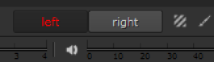

只能显示项目设置中存在的视图。要查看这些视图的列表，或添加或删除视图，请选择 项目 > 编辑设置 然后去 视图 标签。有关更多信息，请参见 为项目设置视图 .
| 1。 | 双击剪辑或序列以将其加载到查看器中。 |
| 2. | 在查看器控件的顶部，单击要显示的视图。在这个例子中, 左 或 右 . |

注意:
Nuke 工作室
列出中的视图
。Exr
文件以它们出现在剪辑标题中的顺序出现，所以一个名为“
左
'可能不总是显示在查看器上方的第一个视图。
如果您的视图没有以正确的顺序出现，您可以在
项目
>
编辑设置
>
视图
标签。请参阅
为项目设置视图
欲了解更多信息。
提示: 您也可以按 ; (分号) 和 ' (向前单引号) 在查看器的不同视图之间移动的键。
| 1。 | 在查看器中单击鼠标右键，然后选择 立体声模式 菜单。 |
| 2. | 选择以下选项之一: |
• Side by Side -以正确的纵横比并排显示视图，并在查看器上方添加选择控件。
• 并排挤压 -并排显示视图并挤压以水平适应格式，并在查看器上方添加选择控件。
• 上面被下面挤压 -显示彼此上方和下方的视图，并压缩以垂直适应格式，并在查看器上方添加选择控件。
| 1. | Right-click in the Viewer and select the Stereo Modes menu. |
| 2. | Select on of the following options: |
• 交错 H -水平交错显示视图，并在查看器上方添加选择控件。
• 交错 V -垂直交错显示视图，并在查看器上方添加选择控件。
• 棋盘 -使用交替的棋盘图案 (从左一个像素和从右一个像素) 显示视图，并在查看器上方添加选择控件。
• 浮雕 -同时使用左红色和右绿色显示视图，并在查看器上方添加选择控件。
• 闪烁 -交替显示两个视图，并在查看器上方添加选择控件。
|
|